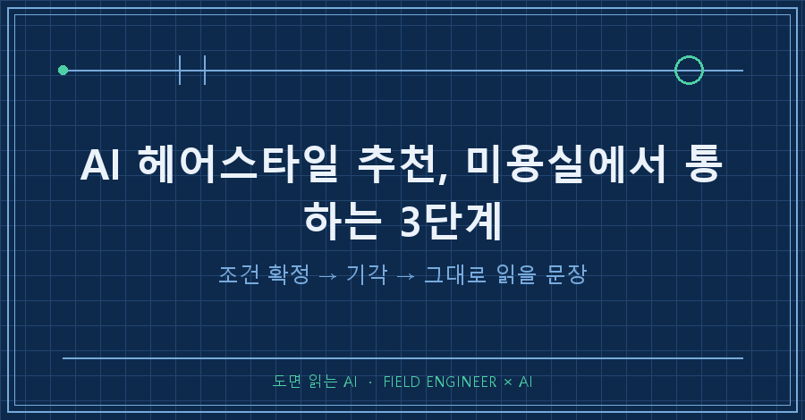
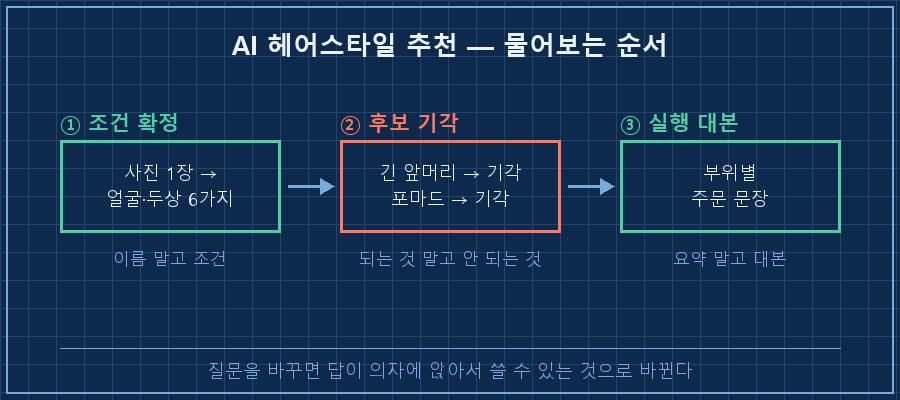
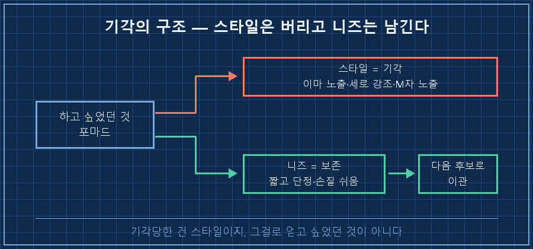
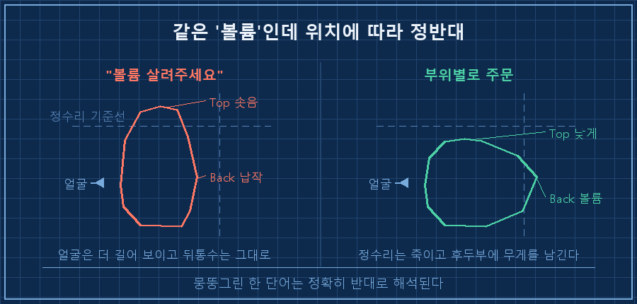

미용실 의자에 앉으면 늘 같은 데서 막혔어요.
"어떻게 해드릴까요?"
"음.. 단정하게요."
그러고 나오면 매번 비슷한 머리였습니다.
며칠 전엔 순서를 바꿔봤어요. 먼저 그 순서만 적어둘게요.
AI 헤어스타일 추천은 "나한테 뭐가 어울려?"라고 물으면 못 써먹습니다. ①사진으로 내 조건부터 확정받고 → ②하고 싶은 스타일을 기각시켜보고 → ③미용실에서 그대로 읽을 문장으로 받는다. 이 순서라야 의자에 앉아서 쓸 수 있는 답이 나와요.
낮에는 도면이랑 제어 로직 붙들고 사는 사람이에요. 그 바닥에서 15년 됐습니다.
직업병이 하나 있는데, 뭘 정하기 전에 조건부터 못 박고 시작하는 버릇이에요.
이번엔 그 버릇을 머리 자르는 데 써봤습니다.
1. "나한테 뭐가 어울려?"는 왜 못 써먹는 질문일까요
조건을 안 주면 답이 스타일 이름에서 멈추기 때문이에요.
이름만 들고 가면 결국 해석은 원장님 몫이 되고, 저는 또 "단정하게요"로 돌아가고요..
AI 헤어스타일 추천이라고 검색해도 사정은 비슷하더라고요. 이름은 쏟아지는데, 그 이름을 의자에 앉아서 어떻게 말할지는 아무도 안 알려주거든요.
그래서 저는 추천을 안 시켰어요. 대신 사진 한 장을 주고 내 얼굴·두상 조건부터 뽑아달라고 했습니다.
돌아온 게 여섯 줄이었어요.
1. 역삼각형 (이마·관자 넓고 턱으로 좁아짐)
2. 긴 얼굴 (세로 강조 주의)
3. M자·넓은 이마 (헤어라인 위쪽 후퇴)
4. 뒤통수 절벽 (후두부 볼륨 필요)
5. 끝 곱슬 (무기로 활용 — 볼륨·밀도)
6. 앞머리 숱 적음 (길게 내리면 두피 비침)평생 달고 산 얼굴인데, 막연히 알던 걸 여섯 줄로 못 박아준 게 이 단계의 전부예요.
근데 이게 있고 없고가 다음 단계를 완전히 갈랐습니다.
5번처럼 단점인 줄 알았던 곱슬이 "무기"로 분류된 것도 여기서 나왔고요.

2. 되는 걸 묻지 말고, 안 되는 걸 물었어요
여기가 이번에 제일 크게 배운 부분이에요.
후보를 나열받는 대신 "이거 하면 왜 안 되는지"를 물으면 답이 갑자기 실행 가능해집니다.
제가 던진 후보는 두 개였어요. 둘 다 기각당했습니다.
- 긴 앞머리 내리기 → 6번(앞머리 숱 적음)에 걸림. 길게 내리면 두피가 비쳐서 역효과.
- 포마드 → 이마 노출 + 세로 강조 + M자 노출. 2번(긴 얼굴)과 1번(역삼각형)을 동시에 악화.
솔직히 말하면 저는 포마드가 하고 싶었어요.
그런데 아내가 진작에 "그거 나이 들어 보인다"고 했었거든요.
기각 논리를 읽는데, 아내가 짚은 지점이랑 정확히 같은 자리더라고요..
사람 눈이 먼저 본 걸, 저는 몇 달 뒤에 얼굴형 논리로 확인한 셈이었어요.
그런데 여기서 안 버린 게 하나 있어요.
포마드를 기각했다고 포마드로 얻고 싶었던 것까지 버리면 안 되잖아요.
제가 원한 건 "짧고 단정한 느낌 + 손질이 쉬울 것"이었고, 그 요구는 그대로 남겨서 다음 후보로 넘겼습니다.
결과적으로 그 두 가지는 다른 스타일에서 다 챙겼어요. 곱슬 덕에 왁스만 발라도 되는 쪽으로요.

3. 마지막은 미용실에서 그대로 읽을 문장이에요
AI 답의 종착지는 요약이 아니라 실행 대본이라고 생각해요.
그래서 마지막엔 "미용실에서 그대로 말할 문장으로 만들어줘"라고 시켰습니다.
확정된 방향은 미디엄 리프컷을 목표로 기르면서 유지하는 거였어요.
앞은 짧은 프린지(프렌치 크롭 계열)로 숱 적은 걸 덮고, 옆뒤는 층을 넣어 볼륨을 주고, 후두부는 위쪽 무게를 남기는 그래쥬에이션으로요.
여기서 제일 헷갈렸던 게 하나 있는데, 이겁니다.
정수리(Top)는 낮게, 뒤통수(Back)는 볼륨.
긴 얼굴이라 위로 솟으면 더 길어 보이고, 뒤통수는 절벽이라 채워야 하거든요.
"볼륨"이라는 같은 단어가 위치에 따라 정반대로 작동하는 거예요. 이걸 뭉뚱그려 "볼륨 살려주세요"라고 하면 정확히 반대로 나옵니다.
그래서 받은 최종 문장이 이거예요.
포마드처럼 짧고 단정한 느낌은 살리되 얼굴 길어서 넘기는 건 제외.
곱슬 살린 짧은 리프컷, 정수리 볼륨 죽이고 옆뒤 볼륨.
뒤통수 절벽이라 후두부 위쪽 무게 남기는 그래쥬에이션(심하면 볼륨펌).
앞머리 숱 적으니 짧은 프렌치크롭으로 이마 반쯤 덮게.
왁스만 발라도 손질되게.관리 계획까지 붙었어요. 4~6주 간격 다듬기 컷으로 과도기를 넘기고, 스타일링은 왁스만.
곱슬이 볼륨을 알아서 만들어주니 드라이 공정을 뺄 수 있다는 계산이었어요.
평생 단점인 줄 알았던 곱슬이 여기서 일을 하네요!
| 물어본 방식 | 돌아오는 답 | 미용실에서 |
|---|---|---|
| "나한테 뭐가 어울려?" | 스타일 이름 | 해석은 원장님 몫 |
| "이거 해도 돼?" (사진+조건) | 되는 이유·안 되는 이유 | 내가 판단 가능 |
| "그대로 말할 문장으로" | 부위별 지시문 | 읽으면 끝 |

솔직한 한계도 적어둘게요.
결론이 "자른다"가 아니라 "기른다"라서, 이 글엔 짜잔 하고 보여줄 비포애프터가 없어요.
판정은 몇 주 뒤 거울에서 납니다. 지금 확실한 건 말문이 막히지 않는 문장 한 덩어리가 손에 생겼다는 것 하나예요.
미용실 가기 전에 궁금할 것들
Q. 사진은 어떤 걸 줘야 하나요?
저는 평범한 사진 한 장만 줬는데 조건 여섯 개가 나왔어요. 뒤통수 라인이 쟁점이라면 옆·뒤 사진을 같이 주는 쪽이 낫겠죠(이건 제 추정이에요, 저는 한 장만 줘봤거든요). 확실한 건 "머리 자를 건데 추천해줘"보다 사진 한 장이 훨씬 세다는 겁니다.
Q. AI가 말한 스타일 이름을 미용실에서 그대로 말해도 되나요?
이름은 해석 차가 커요. "리프컷"이라는 한 단어보다, 앞·옆뒤·후두부를 각각 어떻게 해달라는 부위별 지시가 안전합니다. 이름은 방향을 잡는 용도로만 쓰고, 실제 주문은 문장으로 하세요.
Q. AI 진단을 그대로 믿어도 되나요?
아니요. 제 경우엔 검증자가 이미 있었어요. 아내가 몇 달 전에 한 말이랑 기각 논리가 겹쳤거든요. 사람 눈으로 본 관찰과 겹치는 부분이 제일 믿을 만한 구간이었습니다. 겹치지 않는 부분은 일단 보류하고 다듬기 컷으로 확인해볼 생각이에요.
정리하면 이래요.
AI 헤어스타일 추천에서 바꿀 건 AI가 아니라 질문의 순서예요.
조건을 먼저 못 박고, 하고 싶은 걸 기각시켜보고, 마지막엔 그대로 읽을 문장으로 받는 것.
기각당했다고 그 스타일로 얻고 싶었던 것까지 버리지 않는 것도요.
미용실에서 말문 막혔던 적, 다들 한 번쯤 있으시죠.
그거 취향이 없어서가 아니라 조건을 말로 못 만들어서더라고요.
AI를 이렇게 사소한 일에 굴려본 기록은 makefield.ai 쪽에 더 있습니다.
---
태그: #AI헤어스타일추천 #얼굴형헤어스타일 #미용실주문멘트 #AI사진분석 #남자헤어스타일추천 #긴얼굴헤어스타일 #역삼각형얼굴 #뒤통수절벽 #리프컷 #프렌치크롭 #AI생활활용 #AI질문하는법 #챗GPT활용법 #현장엔지니어 #도면읽는AI